Otros felinos🐾
Los gatos domésticos (Felis catus) pertenecen a la familia Felidae, que incluye una gran variedad de felinos salvajes. Aunque algunos son pequeños y comparten características con los gatos domésticos, otros, como los grandes felinos, son muy diferentes en tamaño y comportamiento. A continuación, exploramos algunos de estos felinos fascinantes:
Felinos pequeños y medianos
Lince canadiense (Lynx canadensis)
Habita en bosques boreales de América del Norte. Reconocido por su tamaño mediano, orejas con mechones negros y patas adaptadas para caminar en la nieve. Caza principalmente liebres, con las que tiene una relación depredador-presa muy marcada.
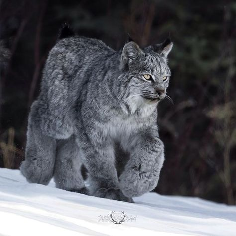
Gato andino (Leopardus jacobita)
Uno de los felinos más raros y esquivos, vive en los Andes de América del Sur. Tiene un pelaje gris con manchas oscuras y una cola muy larga y anillada. Está en peligro de extinción debido a la pérdida de hábitat.
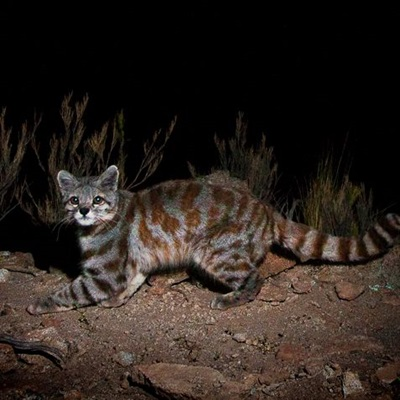
Gato huiña (Leopardus guigna)
Endémico de Chile y Argentina, es el felino más pequeño de América. Suelen tener pelaje oscuro con manchas pequeñas. Es ágil y excelente trepador, adaptado a bosques densos.
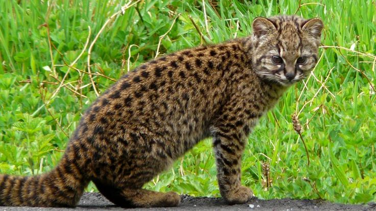
Tirica o gato tigre (Leopardus tigrinus)
Se encuentra en América Central y del Sur. Tiene un pelaje moteado similar al del ocelote, pero es más pequeño. Prefiere hábitats boscosos y es principalmente nocturno.
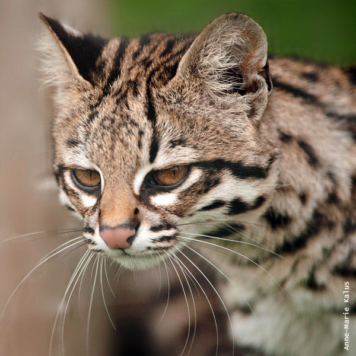
Yaguarundí (Herpailurus yagouaroundi)
De cuerpo alargado, patas cortas y orejas redondeadas. Habita desde México hasta el norte de Argentina. Su pelaje es uniforme, variando entre gris, negro y rojizo.
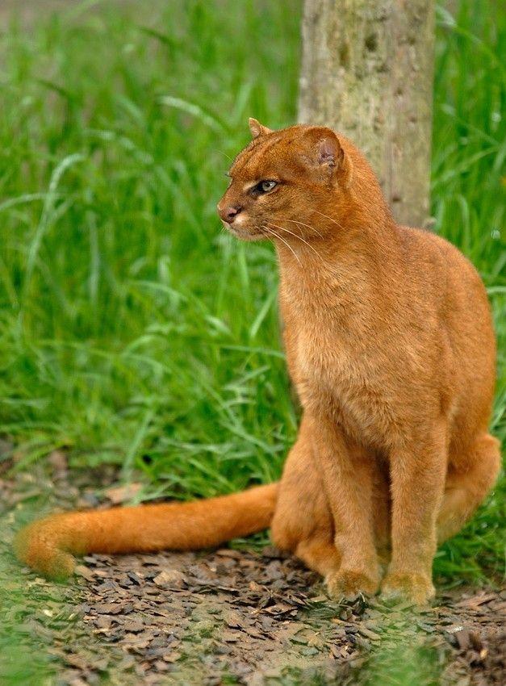
Felinos grandes
Ocelote (Leopardus pardalis)
Habita en selvas tropicales desde el sur de Texas hasta América del Sur. Su pelaje tiene manchas y rosetas características. Es un ágil cazador, tanto en el suelo como en los árboles.
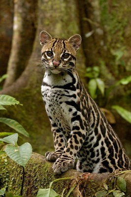
Panthera uncia (Leopardo de las nieves)
Habita en las montañas de Asia Central. Tiene un denso pelaje gris claro con manchas oscuras, adaptado a climas fríos. Está en peligro debido a la caza furtiva y pérdida de hábitat.
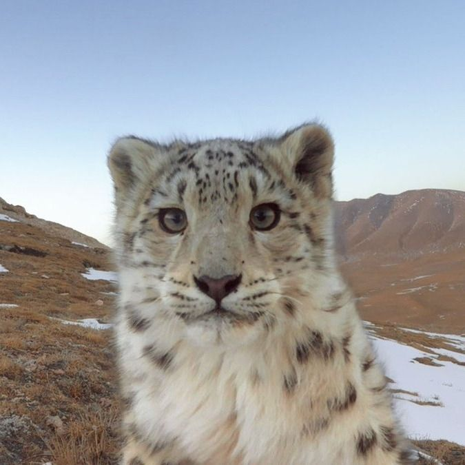
Puma (Puma concolor)
También conocido como león de montaña o cougar, se encuentra desde Canadá hasta el sur de Sudamérica. Su pelaje es uniforme, generalmente de color marrón claro o beige. Es un gran depredador, capaz de cazar presas mucho más grandes que él.
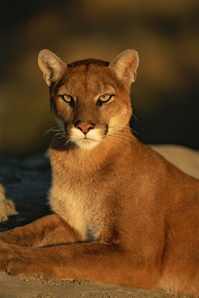
Serval (Leptailurus serval)
Habita en sabanas africanas. Tiene patas largas y grandes orejas, ideales para cazar en pastizales. Su pelaje está cubierto de manchas y rayas negras.
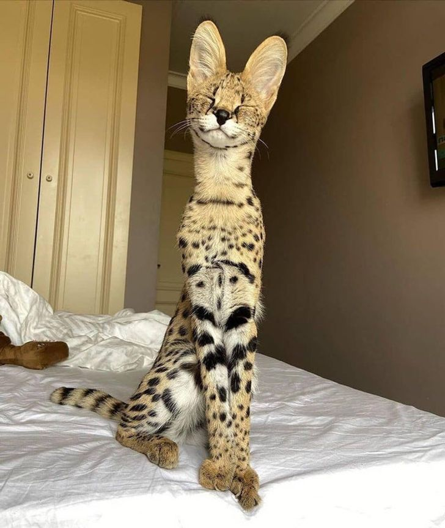
Tigre (Panthera tigris)
El felino más grande del mundo, nativo de Asia. Su pelaje anaranjado con rayas negras es inconfundible. Existen varias subespecies, algunas en grave peligro de extinción.
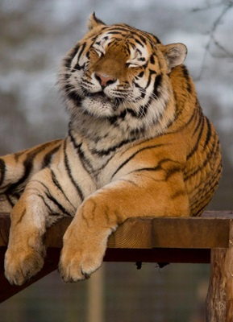
Yaguareté (Panthera onca)
También conocido como jaguar, es el felino más grande de América. Habita en selvas tropicales y pantanos. Su pelaje amarillo con rosetas negras es similar al del leopardo, pero más robusto.
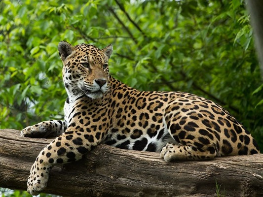
Conservación
Muchos de estos felinos enfrentan amenazas debido a la caza, pérdida de hábitat y conflictos con humanos. Su conservación es fundamental para mantener el equilibrio ecológico en sus respectivos ecosistemas.
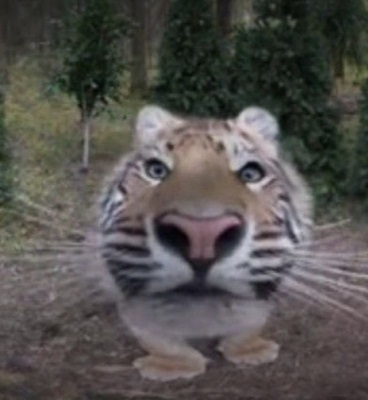